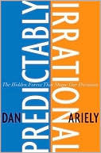

Predictably Irrational: The Hidden Forces That Shape Our Decisions
- Read on 2015-01-01
- Rating: ️️️️️
- Format: 🎧 (7 hours 22 minutes)
What a frustrating book. I wanted to dislike this book, mainly to be contrairian with the person who recommended it to me. In reality, I really liked it, and was sure to announce my order for my lunch first when I next met with the original recommender.
- Prior: Jurassic Park
- Next: Refactoring